Botmux × Midscene
19/29 cases passed · 10 failed · 0 skipped · 0 not run
| Case | Project | Status | Duration | Node screenshot | Replay | |
|---|---|---|---|---|---|---|
| ✅ | Navigate the core read-only Dashboard pages | dashboard-smoke | success | 40.2 s | 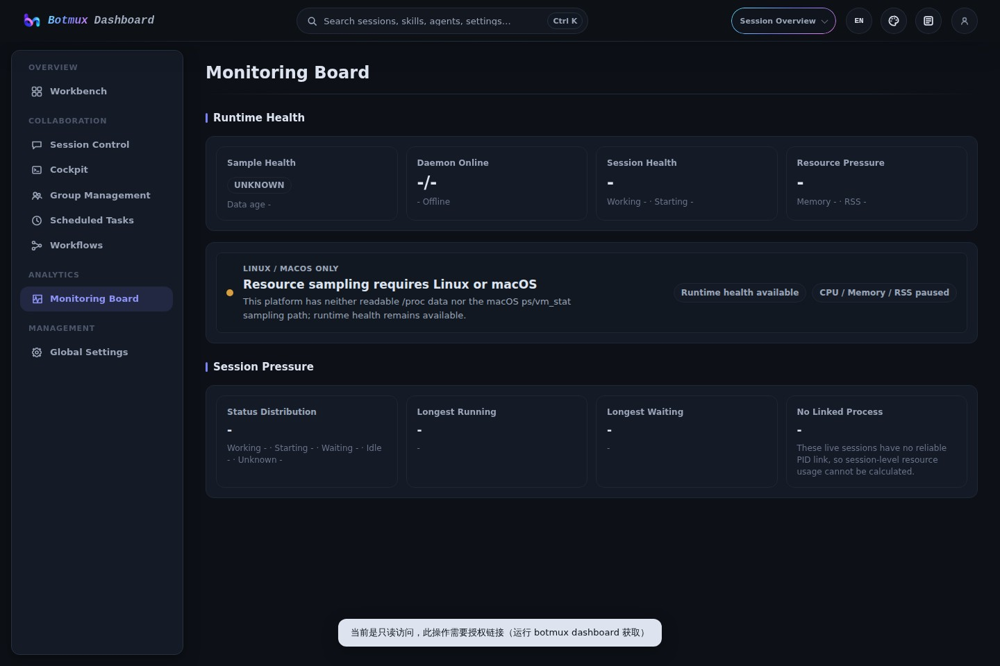 | Not available |
| ❌ | Claude basic bot flow waitFor timeout: Based on the screenshot, in the main content area (right panel), there is a streaming card from "[Botmux]Claude" located above the text bubble containing "ACK-e2e-claude-179283712061… | feishu-core-claude | failed | 916.2 s | 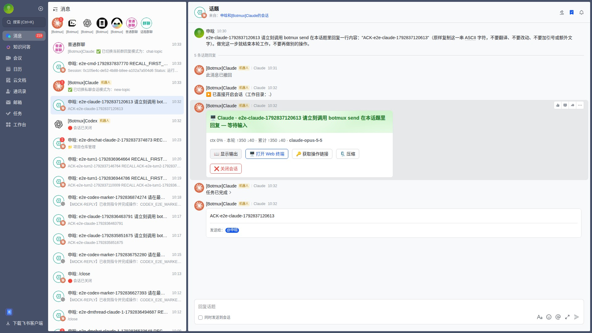 | |
| ✅ | Codex basic bot flow | feishu-core-codex | success | 398.3 s | 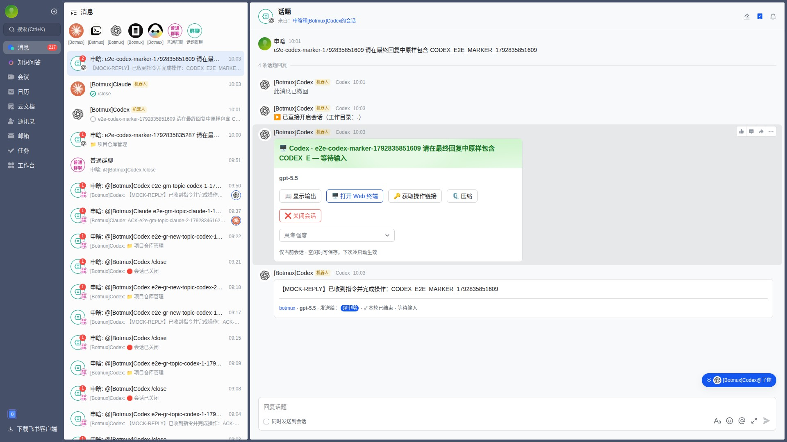 | Passed — recording kept in the run artifact |
| ✅ | Codex prompt submission | feishu-core-codex | success | 198.0 s | 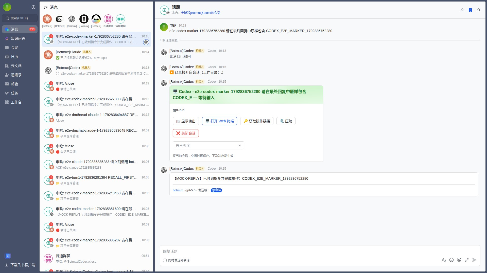 | Passed — recording kept in the run artifact |
| ✅ | Follow-up in the same topic keeps context | feishu-core-conversation | success | 722.9 s | 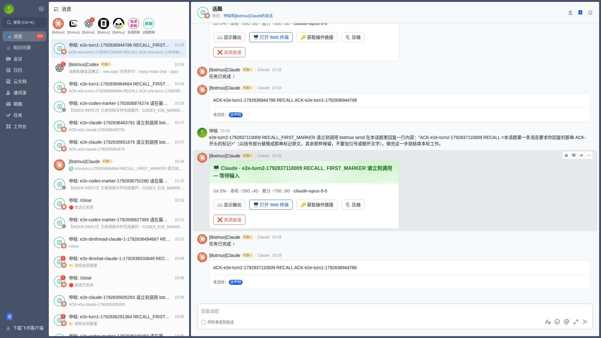 | Passed — recording kept in the run artifact |
| ✅ | Thread /status and /close commands | feishu-core-conversation | success | 1490.6 s | 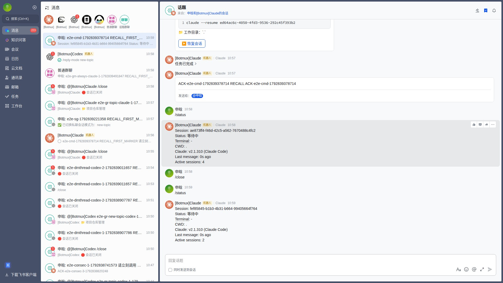 | Passed — recording kept in the run artifact |
| ❌ | Claude DM chat mode replies inline and keeps one session Reply "ACK-e2e-dmchat-claude-2-1792837374873 RECALL ACK-e2e-dmchat-claude-1-1792837261735" appeared 0 time(s) within 240000ms, expected 1 (clicked 直接开启会话 0×; re-opened 0×; repo card buttons 0 visible… | feishu-core-dm-modes-claude | failed | 881.4 s | 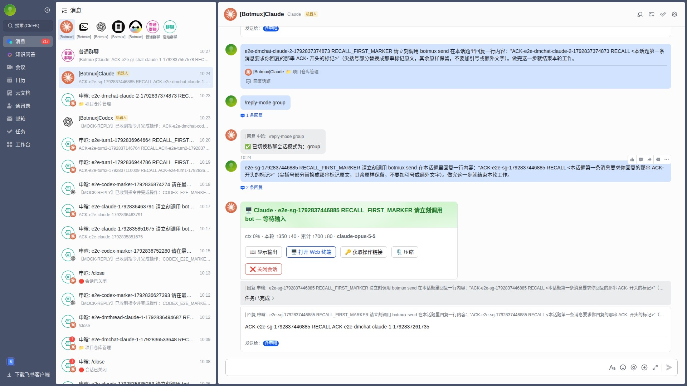 | |
| ✅ | Claude DM thread mode gives each message its own topic and session | feishu-core-dm-modes-claude | success | 739.7 s | 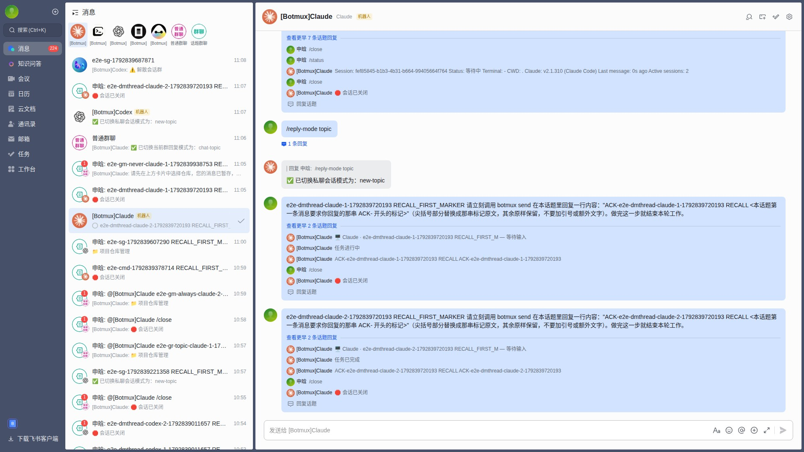 | Passed — recording kept in the run artifact |
| ✅ | Claude DM group mode moves the conversation into a new session group | feishu-core-dm-modes-claude | success | 619.2 s | 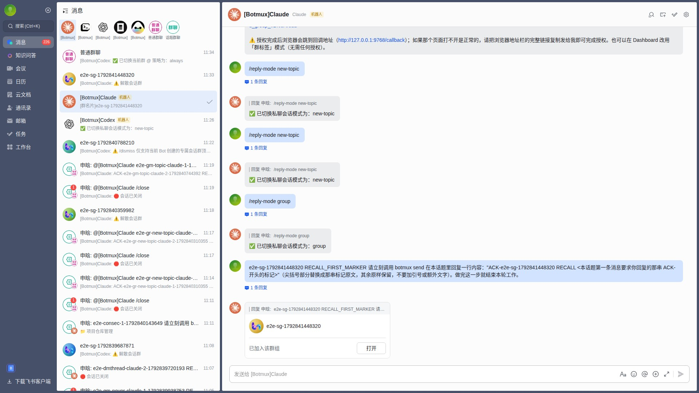 | Passed — recording kept in the run artifact |
| ❌ | Codex DM chat mode replies inline and keeps one session waitFor timeout: Based on the screenshot, the right-side chat area's top header displays the conversation title as "申晗和[Botmux]Claude的会话". The statement claims that the title displays "[Botmux]Codex"… | feishu-core-dm-modes-codex | failed | 214.0 s | 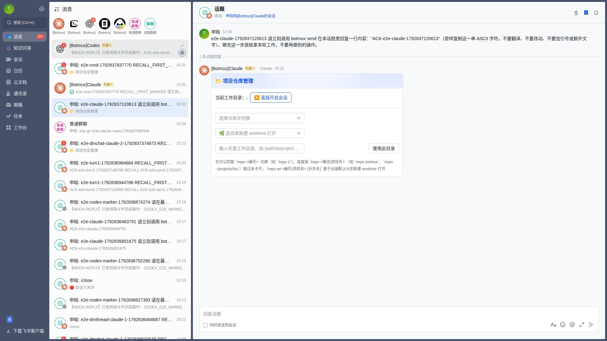 | |
| ✅ | Codex DM thread mode gives each message its own topic and session | feishu-core-dm-modes-codex | success | 604.3 s | 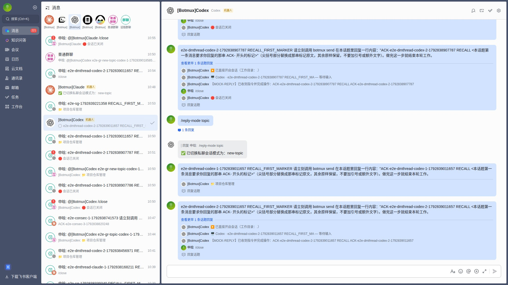 | Passed — recording kept in the run artifact |
| ✅ | Codex DM group mode moves the conversation into a new session group | feishu-core-dm-modes-codex | success | 512.5 s | 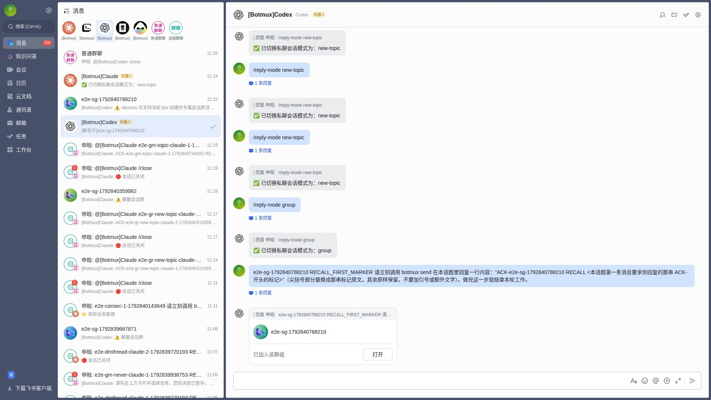 | Passed — recording kept in the run artifact |
| ❌ | Claude group reply mode chat-topic (default) answers inline, topics get their own session Replanned 20 times, exceeding the limit. Please configure a larger value for replanningCycleLimit (or use MIDSCENE_REPLANNING_CYCLE_LIMIT) to handle more complex tasks. | feishu-core-group-modes | failed | 306.9 s | 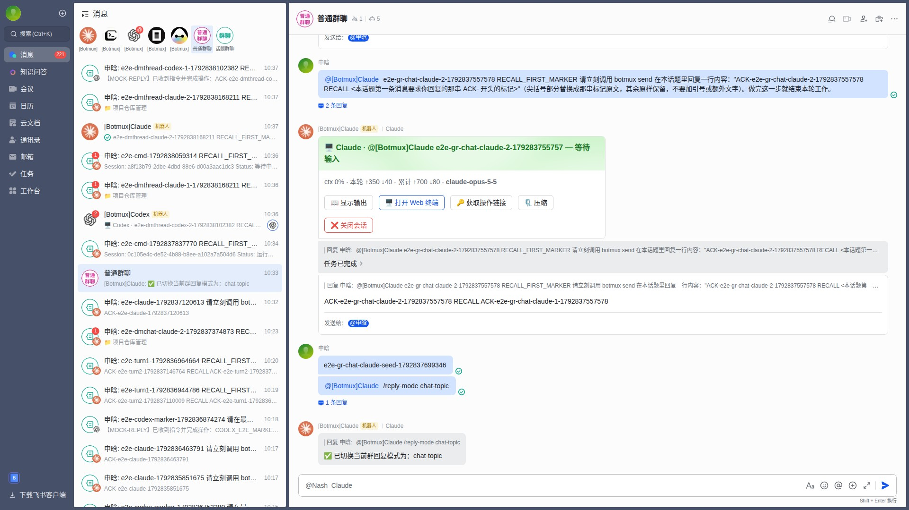 | |
| ❌ | Claude group reply mode chat answers inline and folds topics into the group session Could not mention [Botmux]Claude: the input still read "@Claude\n\n" | feishu-core-group-modes | failed | 866.7 s | 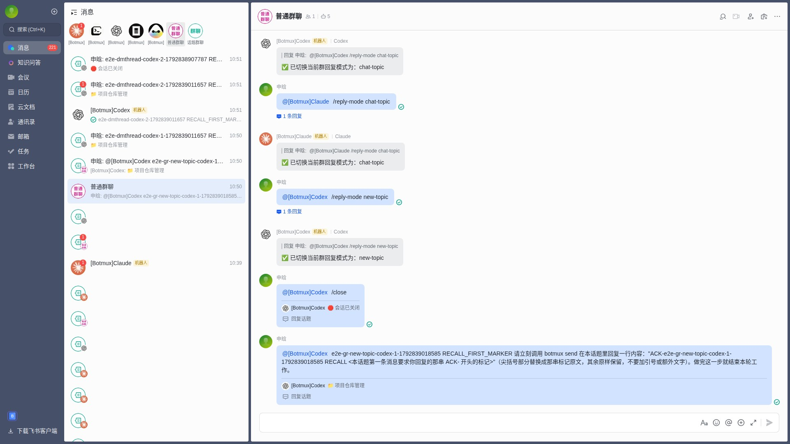 | |
| ❌ | Claude group reply mode topic answers in topics that share one session Reply "ACK-e2e-gr-topic-claude-1-1792839358481 RECALL ACK-e2e-gr-topic-claude-1-1792839358481" appeared 0 time(s) within 240000ms, expected 1 (clicked 直接开启会话 3×; re-opened 0×; repo card buttons 1 vis… | feishu-core-group-modes | failed | 872.0 s | 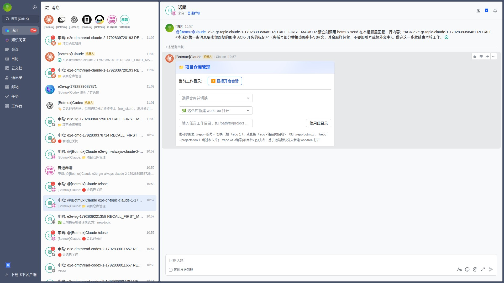 | |
| ✅ | Claude group reply mode new-topic starts a session per topic | feishu-core-group-modes | success | 701.7 s | 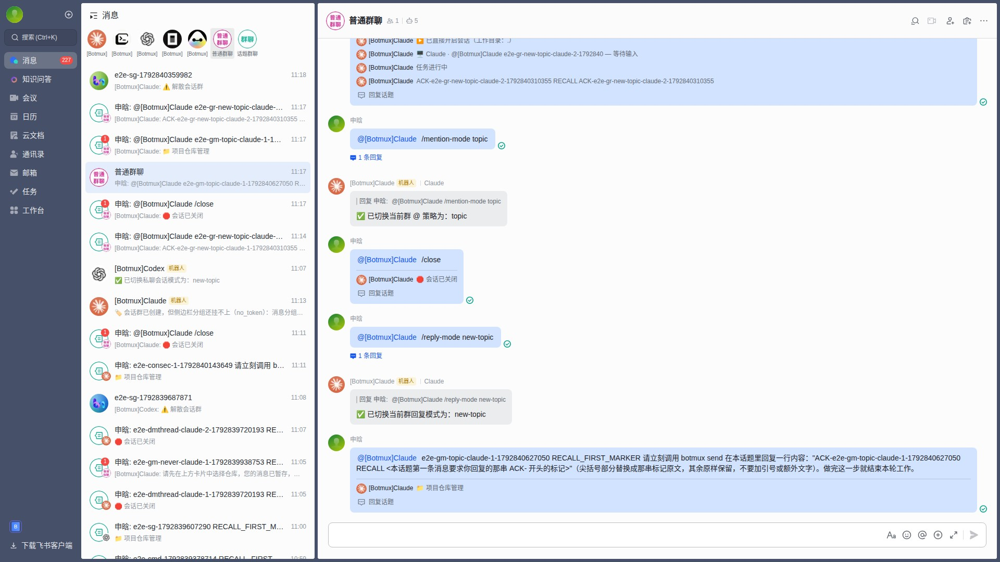 | Passed — recording kept in the run artifact |
| ❌ | Codex group reply mode chat-topic (default) answers inline, topics get their own session Could not mention [Botmux]Codex: the input still read "" | feishu-core-group-modes | failed | 467.8 s | 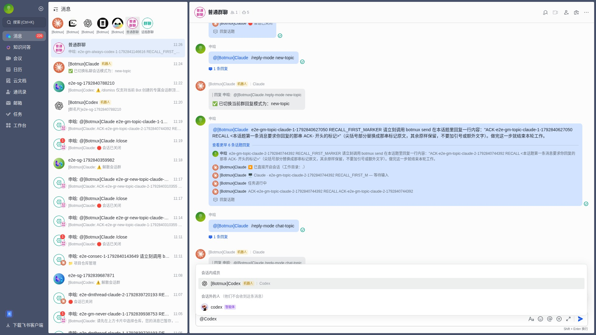 | |
| ❌ | Codex group reply mode chat answers inline and folds topics into the group session Reply "ACK-e2e-gr-chat-codex-1-1792841349781 RECALL ACK-e2e-gr-chat-codex-1-1792841349781" appeared 0 time(s) within 240000ms, expected 1 (clicked 直接开启会话 0×; re-opened 0×; repo card buttons 0 visible… | feishu-core-group-modes | failed | 436.4 s | 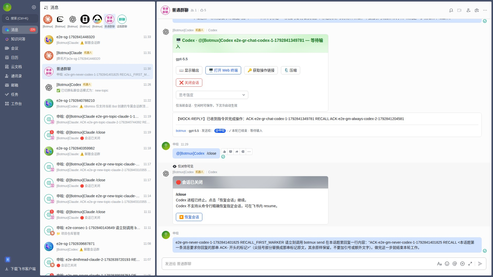 | |
| ❌ | Codex group reply mode topic answers in topics that share one session openThreadForMessage: couldn't find topic entry containing "e2e-gr-topic-codex-2-1792841751652" within 180000ms | feishu-core-group-modes | failed | 586.4 s | 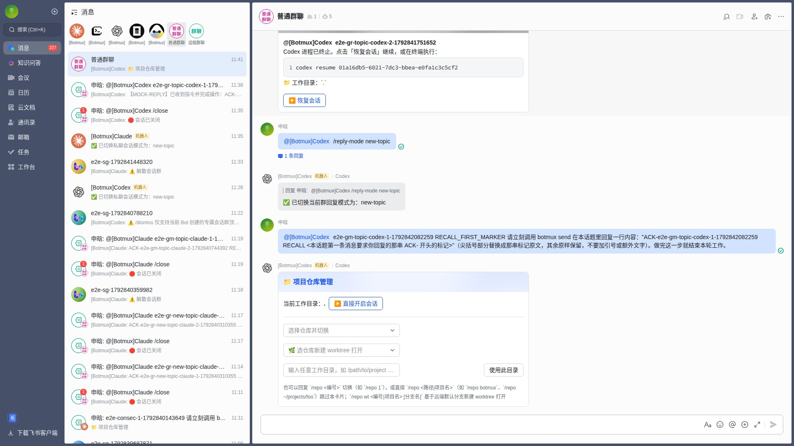 | |
| ❌ | Codex group reply mode new-topic starts a session per topic waitFor timeout: Based on the screenshot, the middle column displays a list of entries. The first entry is labeled "普通群聊" (Normal Group Chat), and subsequent entries show bot interactions like "[Botm… | feishu-core-group-modes | failed | 266.7 s | 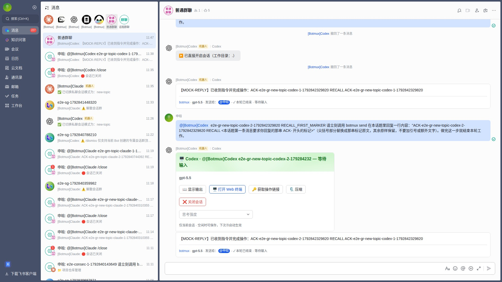 | |
| ✅ | Claude group @ mode always ignores messages without an @ | feishu-core-group-modes | success | 232.3 s | 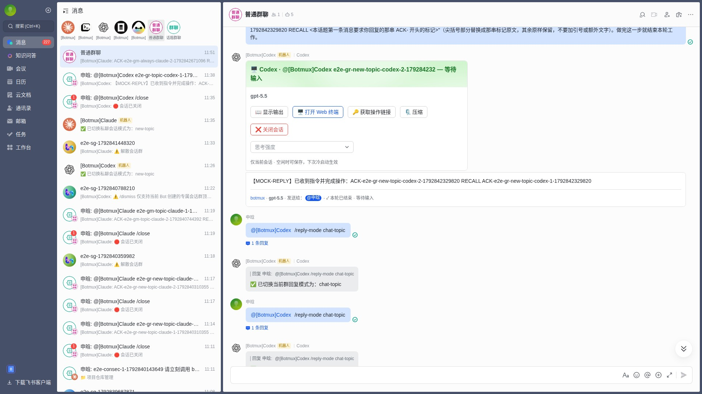 | Passed — recording kept in the run artifact |
| ✅ | Claude group @ mode never answers without an @ | feishu-core-group-modes | success | 178.3 s | 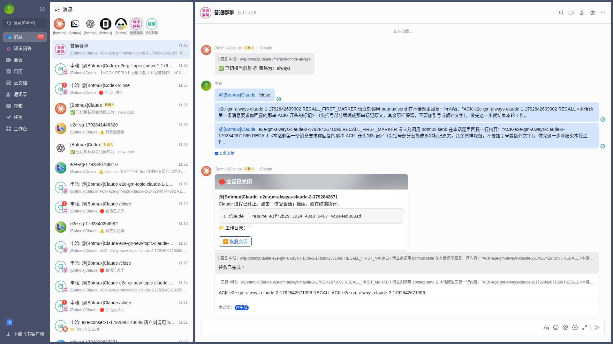 | Passed — recording kept in the run artifact |
| ✅ | Claude group @ mode ambient answers without an @ but yields to others | feishu-core-group-modes | success | 266.1 s | 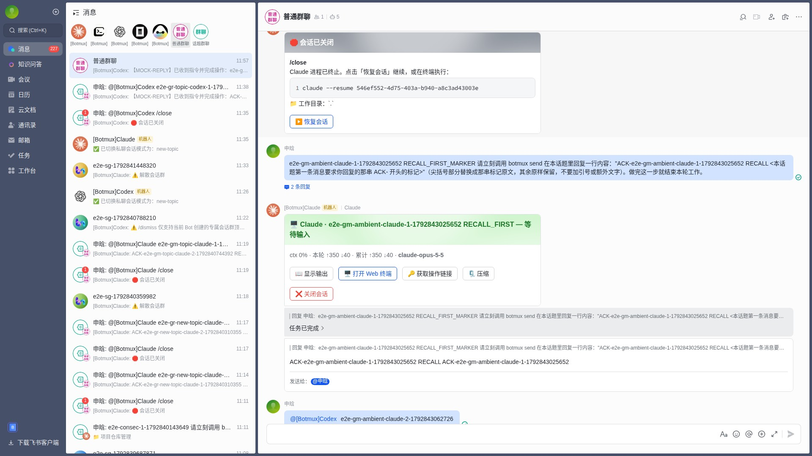 | Passed — recording kept in the run artifact |
| ✅ | Claude group @ mode topic continues its own topic without an @ | feishu-core-group-modes | success | 432.2 s | 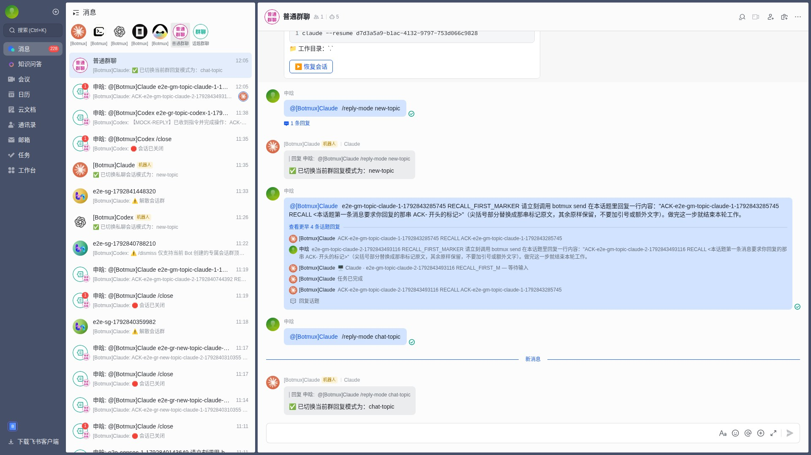 | Passed — recording kept in the run artifact |
| ✅ | Codex group @ mode always ignores messages without an @ | feishu-core-group-modes | success | 217.1 s | 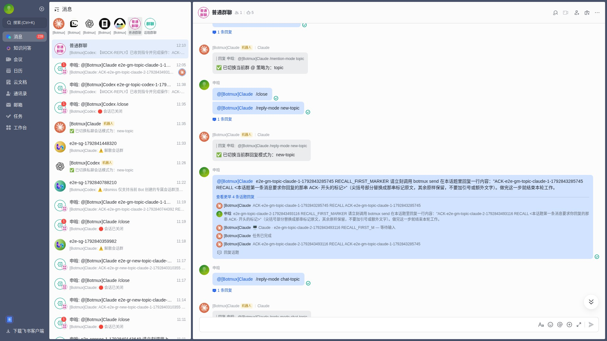 | Passed — recording kept in the run artifact |
| ✅ | Codex group @ mode never answers without an @ | feishu-core-group-modes | success | 157.5 s | 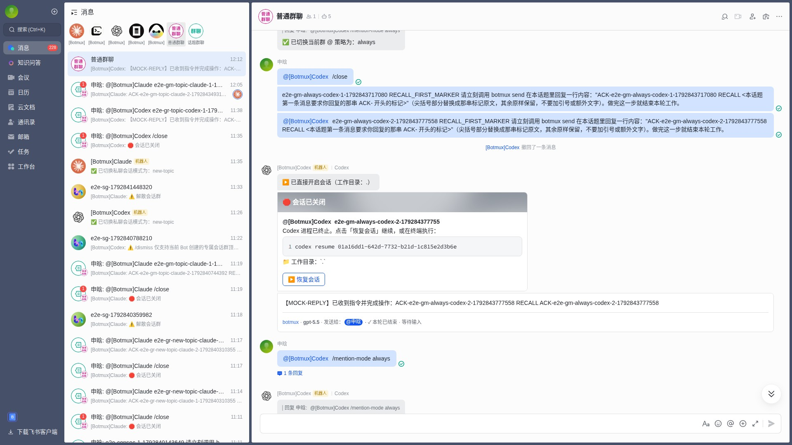 | Passed — recording kept in the run artifact |
| ✅ | Codex group @ mode ambient answers without an @ but yields to others | feishu-core-group-modes | success | 217.7 s | 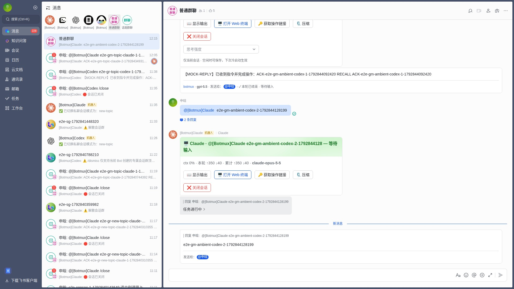 | Passed — recording kept in the run artifact |
| ✅ | Codex group @ mode topic continues its own topic without an @ | feishu-core-group-modes | success | 340.6 s | 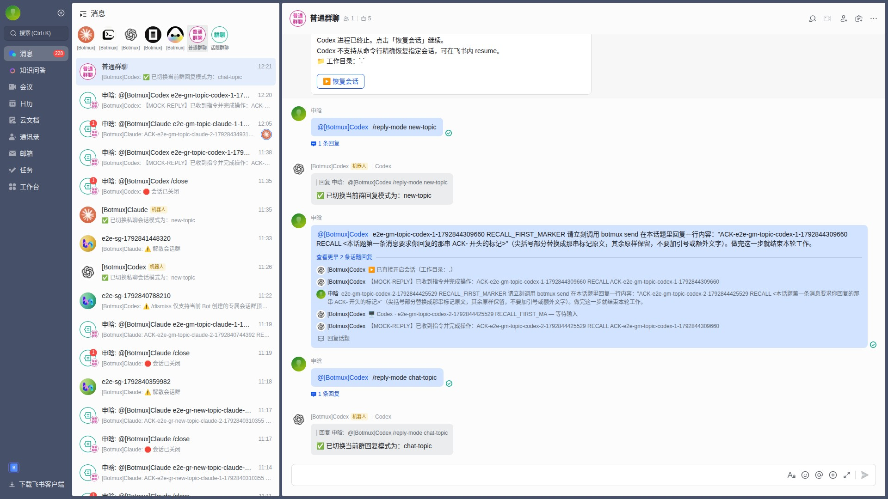 | Passed — recording kept in the run artifact |
| ✅ | Consecutive message queue | feishu-core-queue | success | 696.2 s | 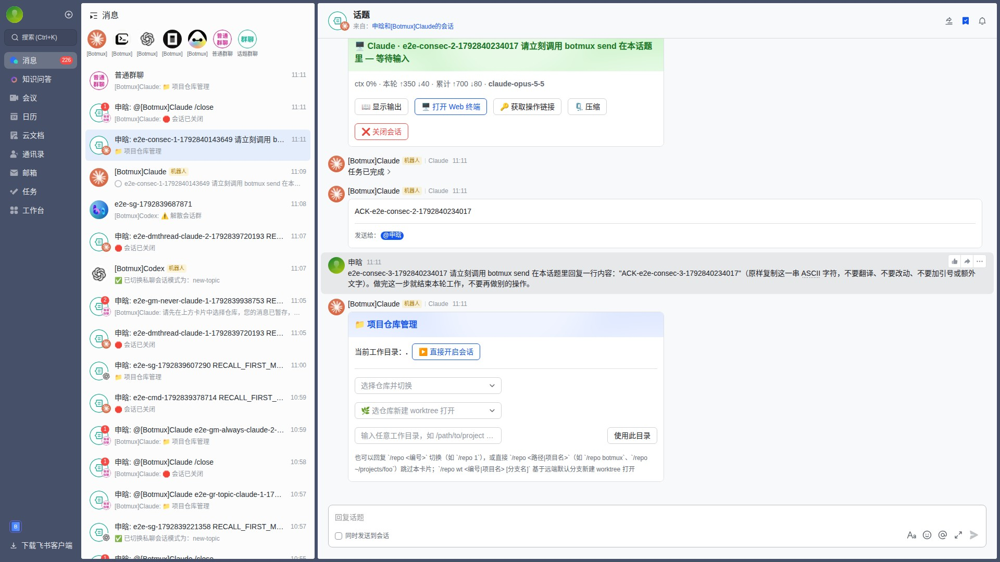 | Passed — recording kept in the run artifact |